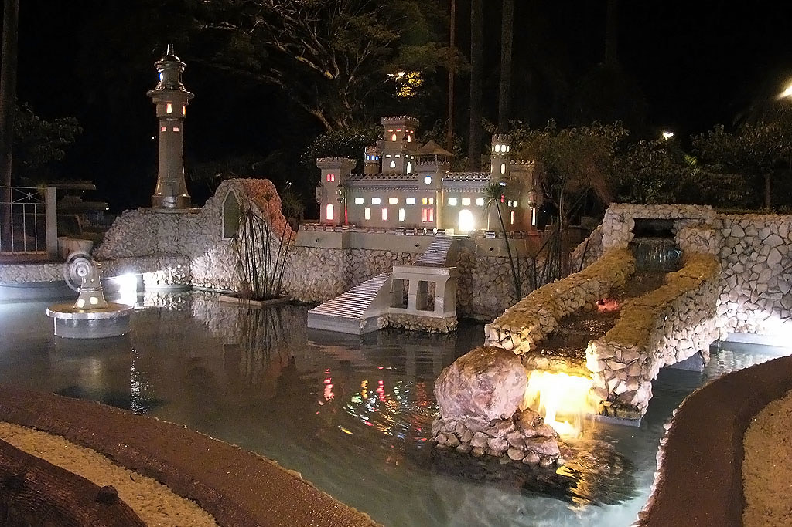

Municípios da Rota Turística
A Região Turística Pantanal Paulista é a união de cidades do interior do Estado de São Paulo com praias, parques, pesca esportiva e passeios inesquecíveis.


Tradições sertanejas marcantes e acolhimento típico do interior paulista.
Saiba maisMurutinga do Sul

Sede de reservas ecológicas e santuário preservado da fauna pantaneira.
Saiba maisNova Independência

A península verde com praias, águas límpidas e forte herança da imigração japonesa.
Saiba maisPereira Barreto

Trilhas de moto, cultura oriental e praças aconchegantes no interior.
Saiba maisValparaíso
Nenhuma cidade encontrada. Tente outro termo.
Município de Andradina
A Terra do Rei do Gado está a 640 km da capital e tem como uma de suas principais fontes de economia a pecuária, com o gado de leite e de corte. É uma cidade em pleno desenvolvimento, que conta com várias empresas e indústrias.
Andradina tem características das grandes metrópoles sem perder o charme e aconchego, típicos de cidades interioranas. Você irá se apaixonar pelo lugar todas as vezes em que pisar lá.
- Comércio
- Rua Paes Leme
- Shopping
- Oeste Plaza
- Cultura
- Estação N.O.B.
- Lazer
- ATC & Igrejas
- Centro Comercial (Natal Iluminado)
- Oeste Plaza Shopping
- Centro Histórico Pioneer (Adélio Sarro)
- Andradina Tênis Clube (ATC)
- Igreja Matriz São Sebastião
- Paróquia Nossa Senhora das Graças
Dica: Visite o calçadão de fim de ano na Rua Paes Leme e aproveite a infraestrutura hoteleira e comercial completa.
Castilho
Localizado no extremo noroeste paulista, Castilho é conhecida como O Paraíso do Pescador. É um município abundante em águas limpas, banhado pelos rios Tietê, Paraná e Aguapeí.
Apresenta vasta fauna e flora, compondo a exuberante natureza do Pantanal Paulista.
- Atração
- Alambique
- Pesca
- Pesqueiro Piapara
- Energia
- Usina Jupiá
- História
- Capela Lapa
- Alambique Estância São João
- Pesqueiro Piapara
- Usina Hidrelétrica Eng. Souza Dias (Jupiá)
- Capela Bom Jesus da Lapa
- Aulas de Mergulho
- Igreja Matriz São José
Prefeitura: Praça da Matriz, Centro
Telefone: (18) 3741-9000
Guaraçaí
Capital do Abacaxi do Estado de São Paulo e Cidade Presépio, unindo o turismo rural, as plantações da fruta e a tranquilidade acolhedora do interior.
- Perfil
- Turismo Rural
- Produção
- Abacaxi
- Plantações de Abacaxi
- Tradição Cultural
- Ambiente Interiorano
Localizada na rota integrada do Pantanal Paulista, com fácil acesso rodoviário.
Ilha Solteira – O Paraíso da Pesca
A Estância Turística de Ilha Solteira é banhada pelos rios Paraná, Tietê e São José dos Dourados. Agraciada por esse grande encontro fluvial, surgiu uma rica biodiversidade, sendo um convite à prática de esportes aquáticos e veleiro.
- Usina
- CTG Brasil
- Lazer
- Praias
- Esporte
- Ciclovias
- Família
- Zoológico
- Usina Hidrelétrica Ilha Solteira
- Praias Catarina e Marina
- Ciclovias (Aluguel de bikes)
- Passeios de Veleiro (Piratas da Ilha)
- Parque da Mantiqueira
- Zoológico / Fauna Silvestre
E-mail: turismo@ilhasolteira.sp.gov.br
Tel: (18) 3743-6088
Itapura
O município de Interesse Turístico de Itapura se instituiu com o encontro dos rios Tietê e Paraná. Palco de Torneios de Pesca famosos, é berço de espécies da fauna, oferecendo clima perfeito para lazer, pesca e mergulho.
- Mergulho
- Usina Eloy Chaves
- História
- Vapor Tamandatay
- Turismo de Mergulho (Usina Eloy Chaves)
- Navio Submerso Tamandatay (1883)
- Encontro dos Rios Tietê e Paraná
- Pesca Esportiva
Prefeitura: Rua Getúlio Vargas, 1087
Tel: (18) 3745-9020
Mirandópolis
Comunidade Yuba de tradição japonesa, rica herança cultural, religiosidade marcante e a histórica Igreja de São João Batista com vitrais singulares.
- Cultura
- Comunidade Yuba
- Patrimônio
- Igreja Matriz
- Comunidade Agrícola Yuba
- Igreja de São João Batista
- Arquitetura e Vitrais
Localizada na região Noroeste Paulista, conectada às principais rodovias regionais.
Murutinga do Sul
Tradições sertanejas marcantes, festividades de rodeio, aconchego típico do interior paulista e hospitalidade sem igual.
- Tradição
- Festas Regionais
- Ambiente
- Aconchegante
- Cultura Sertaneja
- Eventos Tradicionais
- Praça Central
Parada acolhedora na rota turística do Pantanal Paulista.
Nova Independência
Sede de reservas ecológicas e refúgio preservado da fauna e flora associada ao ecossistema regional e ao Parque Estadual do Aguapeí.
- Ecologia
- Parque Aguapeí
- Natureza
- Preservação
- Parque Estadual do Aguapeí
- Refúgio de Fauna
- Turismo Ecológico
Destino imperdível para os amantes da contemplação ambiental.
Estância Turística de Pereira Barreto
Charme e natureza preservada na incrível península encravada nas águas límpidas da foz do Rio Tietê. Fundada por imigrantes japoneses, guarda fortes traços culturais na culinária e monumentos.
- Praia
- Pôr do Sol
- Canal
- 9.600 metros
- Cultura
- Go-Ju-No-To
- Lazer
- Stand Up Paddle
- Praia Pôr do Sol e Aquário Municipal
- Canal Artificial de Pereira Barreto
- Museu Histórico da Colonização
- Templo de Madeira Go-Ju-No-To
- Monumento Relojão
- Pesca do Tucunaré
Entrada franca na Praia Pôr do Sol com quiosques equipados e infraestrutura turística completa.
Sud Mennucci - Município de Interesse Turístico
Banhada em 30km pelas águas límpidas do Rio Tietê, com sol o ano inteiro. Reconhecida nacionalmente como "Terra do Tucunaré", sedia anualmente o campeonato de pesca esportiva "Tucuna Free".
- Rio
- Tietê (30km)
- Evento
- Tucuna Free
- História
- Fazenda Triunfo
- Lazer
- Parque da Saúde
- Paróquia Nossa Senhora Aparecida
- Prainha da Areinha
- Fazenda Triunfo (Pista de pouso)
- Parque da Saúde
- Quiosque "Recanto das Águas"
Excelente infraestrutura de ranchos para locação e turismo fluvial no Rio Tietê.
Município de Suzanápolis
Cidade de pequeno porte com cerca de 3 mil habitantes, destacando-se pelas belezas naturais, atrativos culturais e religiosos, tendo o rio São José dos Dourados como principal símbolo para pescadores.
- Esporte
- Estádio Gervásio
- Aventura
- 110km Trilhas
- Natureza
- Mata da Suzana
- Arte
- Casa de Momentos
- Praça Salvador Ferreira
- Igreja Matriz (Chegada dos Reis)
- Estádio Municipal Gervásio Durigan
- Mata da Suzana (2000 hectares)
- Casa de Momentos (Nenzinho)
Opções completas para mountain bike, motocross e ecoturismo regional.
Valparaíso
Trilhas de moto, fortes traços de cultura oriental e a aprazível Praça Matriz com fonte luminosa, além de castelo bonsai e muita hospitalidade.
- Lazer
- Praça Matriz
- Aventura
- Trilhas
- Praça Matriz e Fonte Luminosa
- Trilhas de Moto e Bicicleta
- Cultura Oriental
Parada obrigatória no roteiro turístico do Extremo Noroeste Paulista.